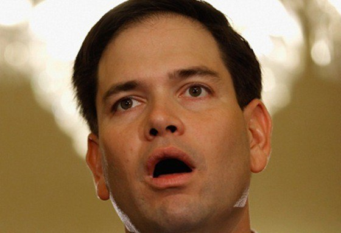

< < < Back
Did Microsoft Commit Voter Fraud In Iowa To Ensure Donald Trump’s Defeat? – Return Of Kings
The first shot in the presidential nomination has been fired, and the finger-pointing has begun. Last night, Ted Cruz pulled off an upset victory in the Iowa Republican caucuses, defeating front-runner Donald Trump by a slim margin, while Hillary Clinton and Bernie Sanders are in a statistical dead heat. Not only that, Marco Rubio exceeded expectations, finishing a close third behind Trump when all the polls showed that he lagged far behind. How did all this happen?
I’ll freely admit that I was wrong when I predicted that Trump would win Iowa by a convincing margin. While Trump’s rallies were drawing the biggest crowds by far of any candidate (Democrat or Republican), I also warned that because the Iowa caucus structure favors long-time party loyalists over first-time voters, the Donald’s supporters might be underrepresented at the actual vote. My predictions on where the other candidates would fall (Rubio in 3rd, Carson 4th, Paul 5th, and Bush 6th) were on the money.
However, the “Rubio surge” makes no sense whatsoever, matching neither what I saw on the ground or what pollsters were reporting. There’s now evidence to suggest that Rubio’s unexpectedly good performance—coming in a close third behind Trump—was the result of voter fraud committed by Microsoft and sanctioned by the RNC. While it’s too early to make a definite call, given that Donald Trump stands against everything that the GOP establishment represents, it’s not out of the question that they would try to fight him with foul play.
Marco Rubio’s Incredible Disappearing Voters

I’ve had the opportunity to attend Iowa campaign events by every major party presidential candidate with the exceptions of John Kasich, Mike Huckabee, Rick Santorum and Jim Gilmore (though I saw Huckabee and Santorum at Trump’s veterans’ rally and shook the latter’s hand). In fact, I attended a Donald Trump rally in Pella and a Marco Rubio town hall in nearby Indianola on the same day, giving me a one-to-one comparison of each candidate’s popularity among Iowans.
In my time in Iowa, Trump’s rallies consistently drew crowds that were larger than all the other candidates’ (Democratic and Republican) combined. Only Bernie Sanders can attract audiences that can compete with Trump in terms of size, though Trump still outpaces Sanders by a wide margin. For example, Trump’s Pella rally on January 23rd drew well over 3,000 people, the majority of whom had to be shunted into an overflow auditorium due to space limits. You can watch my recording of that rally below:
Conversely, Marco Rubio could barely move the needle in terms of audience size. His Indianola event drew 150-200 people at most, the bulk of whom were senile old farts. Check out my recording below:
Lest you wrongly think that voter turnout and rally turnout have no correlation, professional pollsters backed up what I saw on the ground: the Iowa caucus was a fight between Ted Cruz and Donald Trump, with Rubio languishing in a distant third with around 10-12 percent of the vote. Moreover, not one single poll in the run-up to the caucus indicated that he would surge to 23 percent, and no one can pinpoint a single reason why Rubio overperformed in the actual vote.
On Sunday, Breitbart reported that Microsoft would be providing technology for tallying votes in the Iowa caucuses. Given that Microsoft is Rubio’s second-largest campaign contributor, this represents a massive conflict of interest. Other sources claim that the GOP establishment had a deliberate plan to goose Rubio’s vote count.
Given that Donald Trump has run an anti-establishment campaign and has refused to accept money from super PACs and other major donors, the GOP brass clearly view him as a threat, so none of this is out of the realm of possibility. While Jeb Bush was previously the anointed candidate of Wall Street, the GOP’s masters may be giving up on him due to his poor polling numbers and shifting their support to Rubio.
Feeling The Bern, Left Out In The Cold

On the Democratic side, I had tepidly predicted that Bernie Sanders would pull off a narrow, upset win, or that if Hillary Clinton won, it would be by a thin margin. As of this writing, the two are neck-and-neck and the vote is too close to call. I was at Hillary’s caucus party last night with Karl Ushanka and got a recording of her victory speech (if you can call it that). Watch it below:
While Hillary’s supporters are trying to spin this as a victory, a saying I read years ago describes the Democratic situation perfectly: if a lightweight fights a heavyweight to a draw, the lightweight won. The vote between Sanders and Clinton was never supposed to be this close, because the very structure of the Democratic nomination was designed to elect Hillary. If the best she can pull off is a draw when she has the media and party machinery on her side, it speaks to how weak she is as a candidate.
While Sanders was not able to pull off the upset that I thought he would (due largely to the same reasons Trump lost; many of his supporters are first-time voters), he and his campaign should be proud of their accomplishments. Sanders’ success in Iowa should further augment his anticipated victory in New Hampshire and give him a fighting chance in the later primaries.
While it’s true that Iowa has a poor record when it comes to predicting the winners of the Republican nomination, Rubio’s shady surge may be a harbinger of GOP dirty tricks down the road. Trump’s sheer dominance in the New Hampshire polls may forestall more foul play, but he needs to be alert and aware of what the establishment has planned for him.
Read More: How The Iowa Presidential Caucuses Work